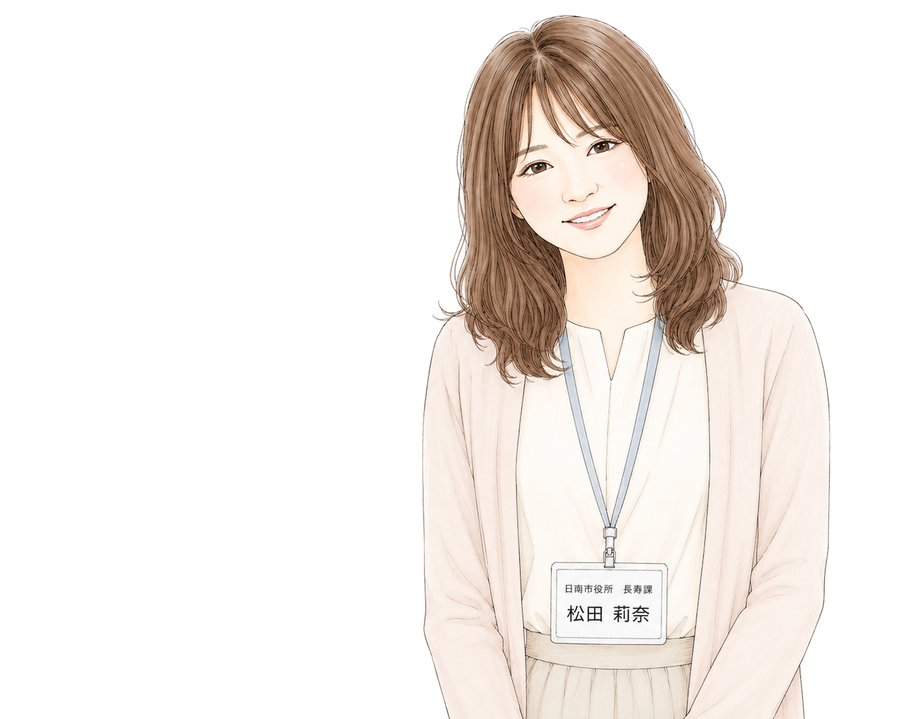

Listening
耳を傾けること
「人との信頼は、まず耳を傾けることから始まると考えています。
一人ひとりの声を丁寧に受け止めることを大切にしています。」
Community Portfolio
日々の対話やつながりを大切に、誰もが安心して暮らせる地域づくりに取り組んでいます。

About
日南市役所で働きながら、窓口や訪問の場で出会う一人ひとりの声に耳を傾けています。制度や手続きの向こう側にある、その人の暮らしや想いを大切にしながら、日々の対話を重ねています。
「誰かに頼ってもいい」と思える関係づくりが、安心して暮らせる地域の土台になると考えています。地域の方々や関係機関とのつながりを大切にしながら、その土台を少しずつ広げていくことを心がけています。
Profile
感動を目指さない。
信頼を目指す。
派手さを目指さない。
心地よさを目指す。
説明を目指さない。
理解を目指す。
完成を目指さない。
成長を目指す。
人との関係は、一度の感動ではなく、
日々積み重なる信頼によって育まれると考えています。
だからこそ、
目立つことより心地よさを、
伝えることより理解を、
完成よりも成長を大切にしています。
耳を傾けること
「人との信頼は、まず耳を傾けることから始まると考えています。
一人ひとりの声を丁寧に受け止めることを大切にしています。」
人とのつながり
「地域にはたくさんの人や想いがあります。
その一つひとつが自然につながるきっかけになれたらと思っています。」
日々を大切にすること
「特別な出来事ではなく、
毎日の小さな安心や笑顔を積み重ねることが、
より良い地域につながると信じています。」
「ご相談やお問い合わせは、
日南市公式ホームページよりお願いいたします。」
日南市役所
「最後までご覧いただき、ありがとうございました。
これからも、一つひとつの出会いを大切にしていきます。」